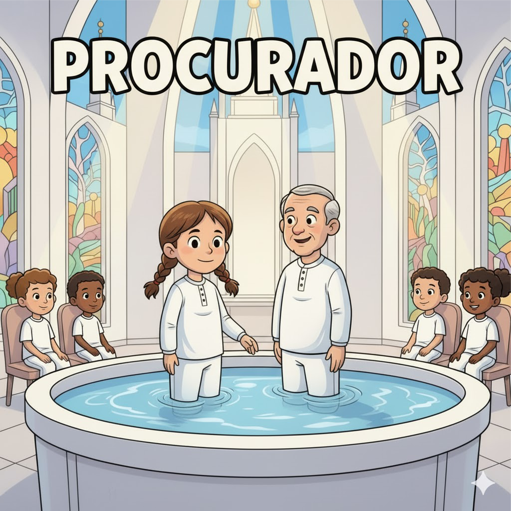

DEVO ME PREPARAR PARA ENTRAR NO TEMPLO

NO ANO QUE FAREI 12 ANOS

O QUE FAREI NO TEMPLO?

BATISMO VICÁRIO E CONFIRMAÇÃO

PARA ISTO TENHO QUE TER UMA PREPARAÇÃO

DEVOLVER O DIZIMO

HONESTO

VIVER A PALAVRA DE SABEDORIA

VIVER A LEI DA CASTIDADE

TER FÉ EM JESUS CRISTO

APOIAR O PROFETA

IR A IGREJA

SE EXEMPLO E CASA

PROCURAR O BISPO

TER UMA RECOMENDAÇÃO

RESPONDER SIM HONESTAMENTE

OBEDECER AS LEIS DE DEUS

GOSTARIA DE CONVIDAR VOCES PARA IREM AO TEMPLO NO PROXIMO SABADO

PROMETO QUE DEUS TE ABENÇOARÁ!
O NOSSO ATUAL PROFETA DISSE:
O propósito dos templos é a exaltação dos filhos de Deus
Tudo o que se ensina e todas as ordenanças que se realizam no templo são um convite a achegar-nos a Jesus Cristo.
O templo é o lugar de maior aprendizado, maior paz e maior alegria que podemos ter na mortalidade
Nenhuma atividade na Terra é mais importante do que o trabalho de templo e história da família, que o Senhor declarou ser a Sua obra
O templo é um lugar onde podemos receber poder e proteção contra as forças do mal que nos rodeiam
A dignidade pessoal para entrar no templo é a melhor proteção que podemos ter neste mundo

PRESTE O SEU TESTEMUNHO